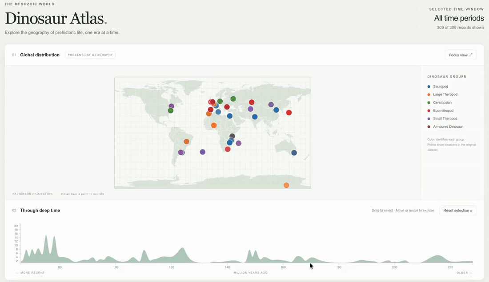
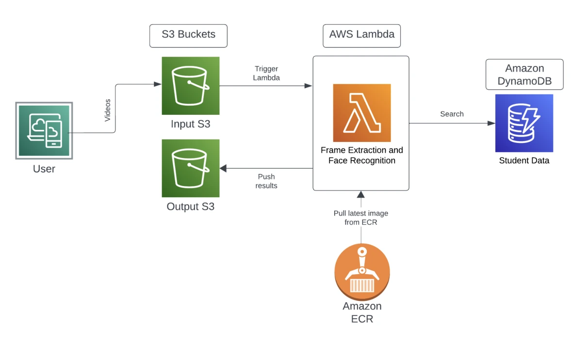
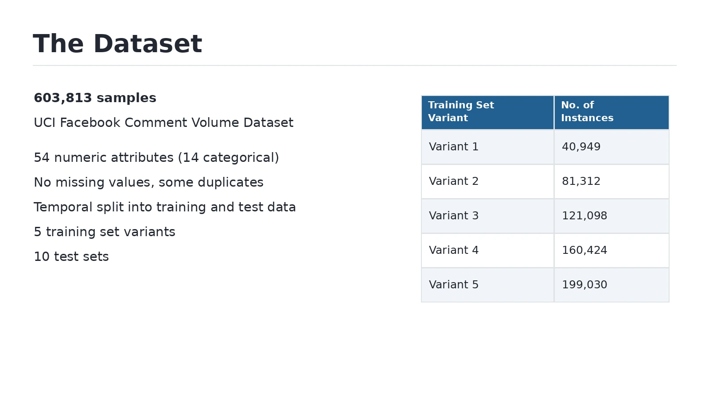

Spatiotemporal Hotspot Detection in NYC Taxi Data
Finding where and when NYC taxi pickups cluster, using Scala and Apache Spark.
Projects in spatial analysis, interactive mapping, cloud computing, and data mining.
Finding where and when NYC taxi pickups cluster, using Scala and Apache Spark.

Exploring 309 dinosaur records on a world map linked to a geological timeline.

Recognizing students in uploaded classroom videos and looking up their academic records.

Comparing four regression models to predict how many comments a Facebook post will receive.